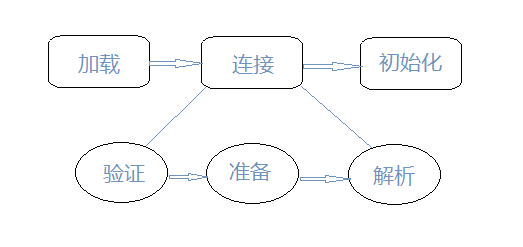

类加载过程
- 一个Java类从编写完成到被卸载的过程：X.java -> X.class（编译为磁盘中的二进制文件）-> 加载（ClassLoader将X.class加载到虚拟机内存）-> 连接 （确定类与类之间的关系，包含验证、准备、解析三步） -> 初始化 -> 使用 -> 卸载。类是在运行期间第一次使用时动态加载的，而不是一次性加载所有类。因为如果一次性加载，那么会占用很多的内存。类加载过程如下图：

加载：加载是类加载的一个阶段，注意不要混淆。
加载阶段完成以下三件事：
- 通过一个类的全限定名来获取定义此类的二进制字节流。
- 将该字节流表示的静态存储结构转换为方法区的运行时数据结构。
- 在内存中生成一个代表该类的java.lang.Class对象，作为方法区该类的各种数据的访问入口。
二进制字节流的获取方式有：
- 从ZIP包读取，成为 JAR、EAR、WAR 格式的基础。
- 从网络获取，典型应用为Applet
- 运行时计算生成，比如动态代理技术，在java.lang.reflect.Proxy中使用ProxyGenerator.generateProxyClass来为特定接口生成代理类的二进制字节流。
- 由其他文件生成，比如由JSP文件生成对应的Class类。
- 从数据库读取。
连接
- 验证：这一阶段的目的是确保 Class 文件的字节流中包含的信息符合当前虚拟机的要求，并且不会危害虚拟机自身的安全。
- 准备：在方法区中，为类的静态变量分配内存，并将其初始化为默认值（例如对于static int a = 10, 此时会赋值为默认值0；布尔类型默认为false；引用类型为null…），但是对于final修饰的常量则直接赋指定值。注意：实例变量（即未被static修饰的变量）不会在这阶段分配内存，它会在对象实例化时随着对象一起被分配在堆中，也就是类加载完成之后了。
- 解析：将class文件常量池的符号引用替换为直接引用的过程。
- 符号引用：与虚拟机的内存布局无关。可以是任何形式的字面量，只要使用时能无歧义地定位到目标即可。
- 直接引用：与虚拟机实现的内存布局相关。可以是直接指向目标的指针、相对偏移量或者能间接定位到目标的句柄。
初始化：为类的静态变量赋予正确的初始值（此时才赋予程序员设定的值），并执行静态代码块。
Java程序对类的使用方式可分为两种：主动引用与被动引用。每个类（接口）只有被Java程序“首次主动引用”时才初始化。包括：
- 使用new实例化该类对象。
- 读取或设置一个类（接口）的静态字段，以及调用一个类（接口）的静态方法。注：被final修饰的静态字段除外。
- 使用java.lang.reflect包的方法对类进行反射调用。
- 初始化某类的子类（先初始化父类）。
- 带main方法的类。
- JDK1.7开始提供的动态语言支持 *。
被动引用例子：
通过子类引用父类的静态字段，不会导致子类初始化。
1
System.out.println(SubClass.value);//value字段在SuperClass中为静态字段
通过数组定义来引用类，不会触发被引用类的初始化。但是该过程会对数组类进行初始化，数组类是一个由虚拟机自动生成的、直接继承自 Object 的子类，其中包含了数组的属性和方法。
1
SuperClass[] array = new SuperClass[10];
常量在编译阶段会存入调用类的常量池中，本质上并没有直接引用到定义常量的类，因此不会触发定义常量的类的初始化。
1
System.out.println(ConstClass.HELLOWORLD);
类加载器
类与类加载器：加载阶段中的“通过一个类的全限定名来获取定义此类的二进制字节流”这个动作在虚拟机外部实现，由类加载器实现。我们可以通过自定义类加载器去控制字节流的获取方式。注意：数组类不通过类加载器创建，它由JVM直接创建。
HotSpot VM内置了三个重要的 ClassLoader，除了 BootstrapClassLoader 其他类加载器均由 Java 实现且全部继承自
java.lang.ClassLoader：- BootstrapClassLoader(启动类加载器) ：最顶层的加载类，由C++实现，负责加载
%JAVA_HOME%/lib目录下的jar包和类或者或被-Xbootclasspath参数指定的路径中的所有类。 - ExtensionClassLoader(扩展类加载器) ：主要负责加载目录
%JRE_HOME%/lib/ext目录下的jar包和类，或被java.ext.dirs系统变量所指定的路径下的jar包。 - AppClassLoader(应用程序类加载器) :面向用户的加载器，负责加载当前应用classpath下的所有jar包和类。
- BootstrapClassLoader(启动类加载器) ：最顶层的加载类，由C++实现，负责加载
双亲委派模型：每一个类都有一个对应它的类加载器。系统中的 ClassLoder 在协同工作的时候会默认使用 双亲委派模型 。即在类加载的时候：
- 系统会首先判断当前类是否被加载过。已经被加载的类会直接返回，否则才会尝试加载。
- 加载的时候，首先会把该请求委派该父类加载器的
loadClass()处理，因此所有的请求最终都应该传送到顶层的启动类加载器BootstrapClassLoader中。 - 当父类加载器无法处理时，才由自己来处理。当父类加载器为null时，会使用启动类加载器
BootstrapClassLoader作为父类加载器。

以上的父子关系一般通过组合关系（Composition）来实现，而不是继承关系（Inheritance）。
- 双亲委派模型的好处：双亲委派模型保证了Java程序的稳定运行，可以避免类的重复加载（JVM 区分不同类的方式不仅仅根据类名，相同的类文件被不同的类加载器加载产生的是两个不同的类），也保证了 Java 的核心 API 不被篡改。如果没有使用双亲委派模型，而是每个类加载器加载自己的话就会出现一些问题，比如我们编写一个称为
java.lang.Object类的话，那么程序运行的时候，系统就会出现多个不同的Object类。
破坏双亲委派模型：自定义类加载器，需要继承ClassLoader。如果不想打破双亲委派模型，就重写
ClassLoader类中的findClass()方法即可，无法被父类加载器加载的类最终会通过这个方法被加载；如果想打破双亲委派模型则需要重写loadClass()方法。